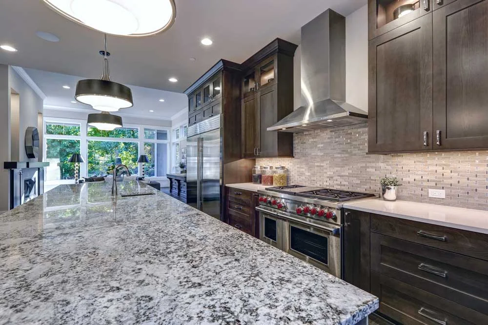
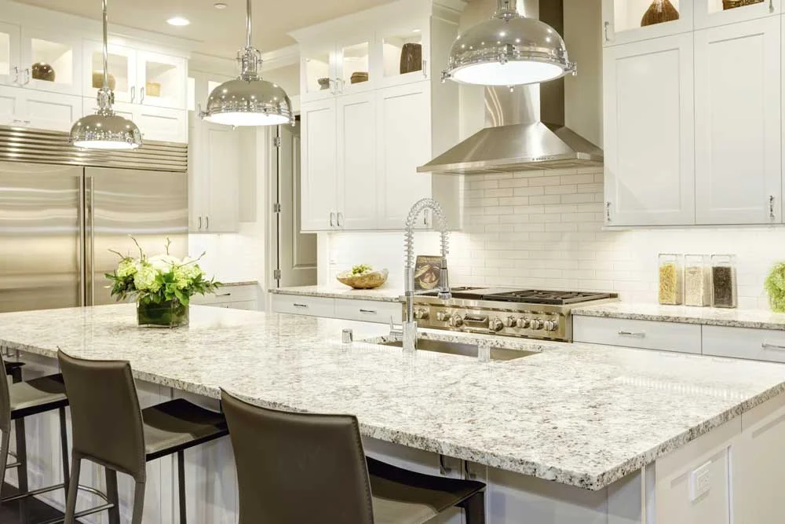
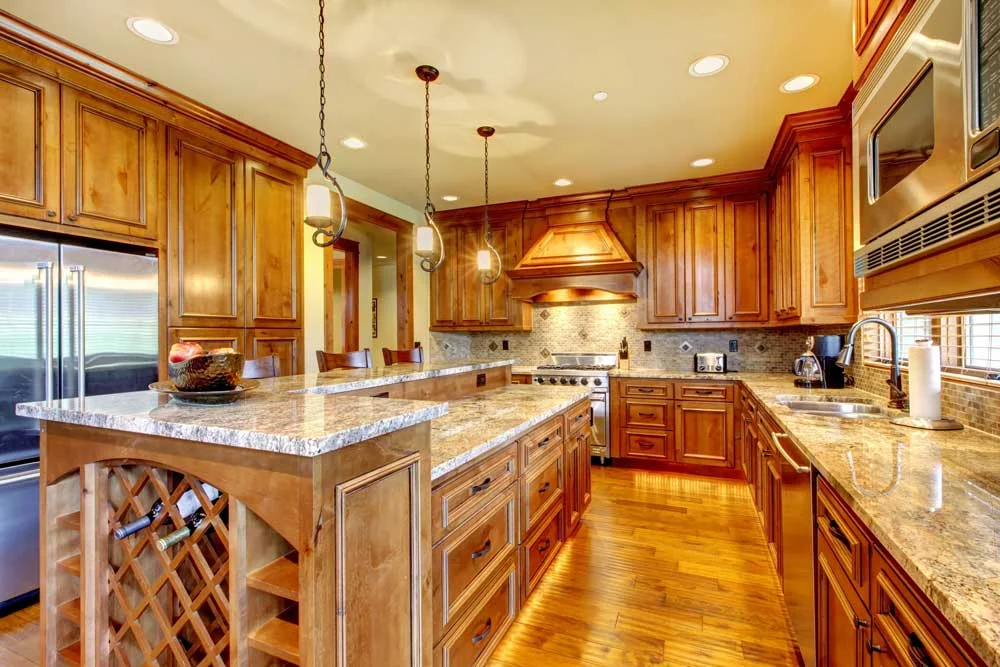
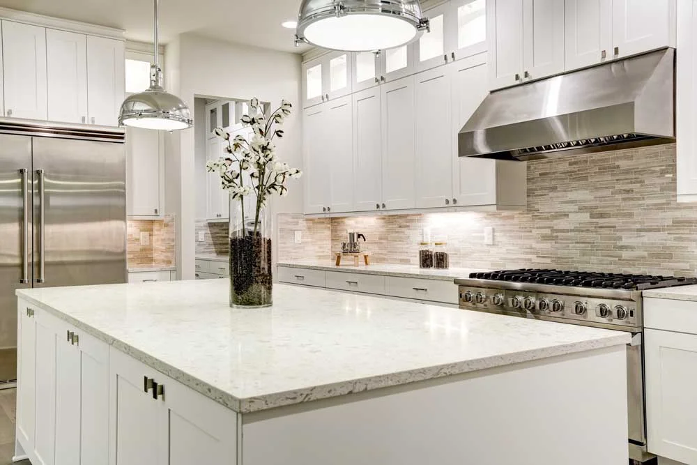

Our Work
Real Projects, Real Results
Every project is measured, fabricated, and installed by our own hands. Here is a sample of our work across Utah.




Family-owned, hands-on craftsmanship from measurement through installation. Serving the entire Wasatch Front and outlying communities with custom granite, quartz, and marble countertops.

We handle everything from in-home templating to final installation, so you get a precise fit every time.
Howard and his team fabricate the full spectrum of natural stone: granite, marble, quartzite, soapstone, limestone, and onyx. Every slab is selected in person at Salt Lake wholesale yards with you.
View All StonesEngineered surfaces give you consistent color, non-porous durability, and simple maintenance. Our team installs quartz and large-format porcelain slabs for kitchens, bathrooms, and outdoor spaces.
View Quartz & Porcelain ServicesCustom kitchen countertops, waterfall islands, full-height backsplashes, and bathroom vanity tops are our core work. Sink cutouts, cooktop openings, and custom edge profiles are all included.
Need a full remodel? Ask us about our trusted partners at DreamMaker.
See All ApplicationsStone extends beyond kitchen counters. Our team installs custom marble and granite fireplace surrounds, hearths, mantles, slab showers, bathtub decks, and stone tables throughout the home.
See All ApplicationsEvery project is measured, fabricated, and installed by our own hands. Here is a sample of our work across Utah.



You work directly with Master Fabricator Howard Gerstner from your first measurement to final polish.
Howard Gerstner has fabricated and installed stone in Utah since 1984. He is personally on every job from templating your cabinets to setting the final slab.
We come to your home, take exact measurements, and give you a clear, no-pressure written quote with zero showroom markups.
Every countertop is cut to your exact layout. Bookmatched veining, tight seams, and clean mitered waterfall edges are our standard.
With 40+ years in Utah stone fabrication, including the St. Regis Hotel at Deer Valley and the Huntsman Cancer Institute, our reputation is built on word-of-mouth referrals.
Every kitchen and lifestyle is different. Explore our dedicated guides for Utah's most popular countertop materials.
Utah's all-time favorite. Heat-resistant, virtually scratch-proof, and one of a kind. Every slab is unique.
Read the full guide →Timeless luxury for kitchens, bathrooms, and fireplace surrounds. Custom honed and polished Carrara, Calacatta, and Statuario slabs with precision mitered edges and bookmatched veining.
Read the full guide →Marble aesthetics with granite durability. Utah's fastest-growing premium stone choice for luxury kitchens.
Read the full guide →The virtually zero-maintenance choice. Non-porous, never needs sealing, and consistent in color across your entire kitchen.
Read the full guide →Read our comprehensive comparison guide to see how Granite, Marble, Quartzite, Quartz, and Porcelain perform side-by-side.
Compare All MaterialsTiny 4-inch sample tiles never tell the full story of a natural granite, marble, or quartzite slab.
Instead of paying for a retail showroom markup, Howard accompanies you directly to major stone wholesalers and slab yards in Salt Lake County. You walk the aisles and inspect the actual full-size slabs in natural light before buying.
At the slab yard, Howard checks each block for structural integrity, natural fissures, and surface finish. He also calculates exact slab yield on the spot so you know whether your kitchen island and perimeter tops can fit on a single slab.
We source daily from Salt Lake City's premier stone distributors, including MSI Surfaces, Arizona Tile, The Stone Collection, Daltile, and GS Marble & Granite. You get wholesale selection with master fabrication.
"During a recent complete home remodel Granite Countertops Utah installed all my kitchen counter tops and backsplashes as well as all my bathroom counter tops and shower seattop, walkout and niches. We used honed carrera marble from Italy. The pricing is very fair. Howard expertly measured everything to produce expert cuts that fit like a glove. The few seams that are needed are practically invisible. Their team of installers are meticulous craftsmen."
"Howard was so great to work with! Very responsive with communication!! He even met me in SLC to make sure I was happy with the countertop I was choosing!! I would highly recommend and definitely work with him again."
"Howard and his team did a great job updating our outdated countertops with custom fresh new quartz. They worked hard to minimize the inconvenience and got the installation completed ahead of schedule."
"Howard helped us from start to finish! We had delays with cabinets and they patiently waited for us. We have a large island and the slab was huge; the installers did a great job getting it safely inside. The end result looks amazing!"
"Howard was great to work with. I was really worried about having to buy another slab of granite, but Howard fit my countertops on 1 slab and placed everything just right. I totally love the way he made my marble grains match up when he mitered the edges."
"We LOVED loved our experience with Howard! Not only is he kind and easy to work with, but his countertops were delivered on time and with top quality! He is honest and hardworking! We would recommend Howard and his crew to everyone!"
"Howard installed our kitchen countertops. We wanted soapstone countertops and could not find any in our city. Howard was extremely helpful in sourcing stone from Colorado and did a great job installing it. He is extremely knowledgeable and helpful."
"Howard was very helpful and prompt. We got exactly what we wanted and we are very happy with the finished product. Good communication and good timing."
"Granite Countertops provided countertops for our house remodel/addition — master bath limestone vanities, master closet counter (quartz), and downstairs bar (marble). The quality of the workmanship was excellent."
5.0 stars on Houzz & Google — verified reviews from real Utah homeowners.
From Salt Lake City and Utah County to custom mountain estates in Park City and Deer Valley, we bring precision stone fabrication and installation right to your home.
Call Howard directly or fill out our quick form to schedule a free in-home measurement at a time that works for you.